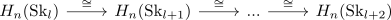

n-th homology determined by n+1 Skeleton
Proposition
Let $(X, \emptyset, \mathrm{SK}_n(X))$ be a CW-Complex and $l \geq n+1$ for $n,l \in \mathbb{N}$ Then it holds for the homology functor
\begin{align*}
H_{n}(\mathrm{Sk}_l) \cong H_n(X)
\end{align*}
Proof
consider the isomorphism of homology for a pushout of cells
\begin{align*}
H_{n}(\mathrm{Sk}_l) \cong H_n(\mathrm{Sk}_{l+1})
\end{align*}
Then by homology of a cw complex as colimit of skeletons it follows, that
\begin{align*}
H_n(\mathrm{Sk}_l)
\end{align*}
suffices together with the inverses of

as colimit